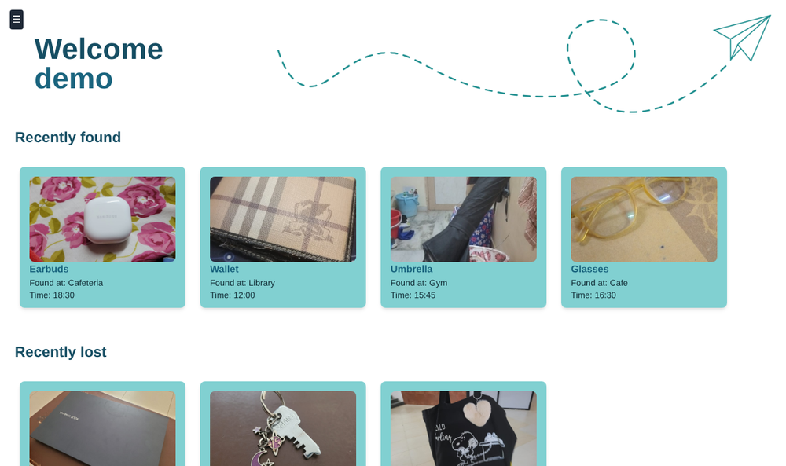

What it does
A campus lost-and-found web app: report something you found, look for something you lost, and see what turned up recently. It is a team project built with Next.js (App Router), React and Tailwind CSS; I wrote most of the commits.

- Landing page with sign-in and sign-up.
- Home with “recently found” and “recently lost” rows.
- Found and Lost pages listing items as cards, with an add-item form.
- Image upload with drag and drop, a live preview, and checks for file type and size.
- Profile page and a collapsible sidebar.